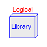
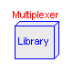
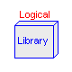
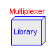

Package ModelicaAdditions.Blocks contains input/output blocks:
Continuous Continuous control blocks Discrete Discrete control blocks Logical Components operating on Boolean signals Multiplexer Extract, combine and split signal connectors of type Real Nonlinear Fixed and varying delays.
Release Notes:
Copyright © 2000-2002, DLR.
The ModelicaAdditions.Blocks package is free software; it can be redistributed and/or modified under the terms of the Modelica license, see the license conditions and the accompanying disclaimer in the documentation of package Modelica in file "Modelica/package.mo".